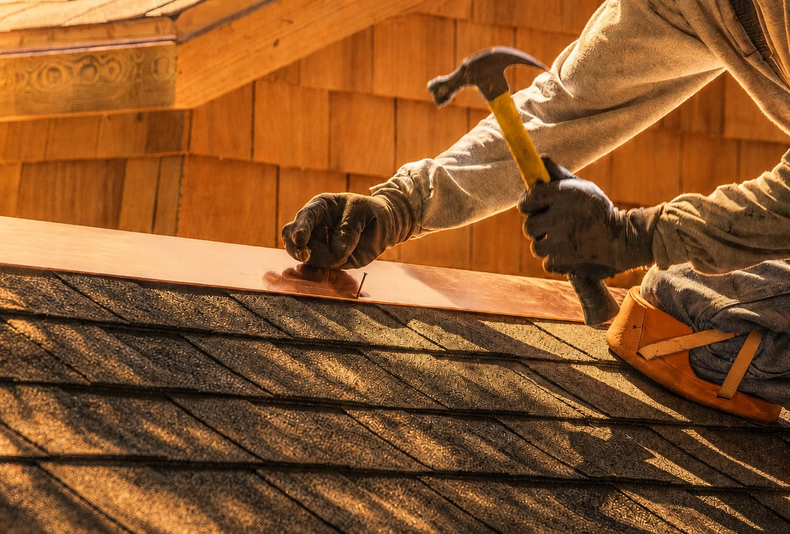

When Your Existing Roof Has Reached Its Limit
Roof Replacement in Arden and Asheville
Not sure whether it is time to replace your roof? Start with an inspection. Get a Free Estimate
When Your Existing Roof Has Reached Its Limit
Not sure whether it is time to replace your roof? Start with an inspection. Get a Free Estimate
A roof does not need to be actively pouring water into the house before replacement becomes worth considering. Widespread granule loss, brittle or curling shingles, repeated repairs, recurring leaks, deteriorated flashing, storm damage, and age can all indicate that the roofing system is nearing the end of its practical service life.
Arden Roofing replaces residential roofs throughout Arden, Asheville, and surrounding Western North Carolina communities. We look at the roof as a whole and explain what we find. If the system is substantially worn or repairing one area is unlikely to solve the broader problem, we can plan a complete replacement designed to give the home a fresh weather-protection system.

Replacement gives us an opportunity to remove worn roofing, examine the underlying surface, correct accessible problem areas, and rebuild the roof using new materials and properly integrated details.
Old roofing materials are removed so the underlying roof surface can be evaluated and prepared for the new system. Tear-off also makes it easier to identify visible decking issues that may have been hidden beneath the previous roof covering.
Once existing materials are removed, accessible roof decking can be checked for areas that are visibly deteriorated or unsuitable for the new installation. Any additional work discovered at this stage is discussed as part of the project.
The replacement system includes the appropriate layers beneath the finished roofing. These components support water management and provide added protection while the roof covering handles normal weather exposure.
Replacement is a good time to address the critical details around walls, valleys, chimneys, vents, and other penetrations. Proper integration at these areas is essential because many roof leaks begin at transitions rather than in the middle of an open roof field.
The new roof covering is installed according to the project requirements and roof design. We focus on consistent layout, fastening, edges, ridges, valleys, and other details that contribute to a complete roofing system.
Roof replacement creates a significant amount of debris, so cleanup is an important part of the job. We remove project waste, review the work area, and communicate final project details before the replacement is considered complete.
| Service | Estimated Cost | Average |
|---|---|---|
| Smaller asphalt roof replacement | $8,000-$13,000+ | Varies by roof |
| Typical residential replacement | $11,000-$22,000+ | Varies by size and complexity |
| Large or complex roof replacement | $20,000-$40,000+ | Project specific |
These are broad planning ranges and are not a substitute for an estimate. Roof size, pitch, height, access, material choice, number of layers, decking repairs, flashing complexity, and disposal requirements can all affect pricing.

We discuss why replacement may make sense instead of treating every roofing concern as an automatic tear-off.
Removing the old roof allows important underlying conditions to become visible before the new system is completed.
If hidden conditions affect the project after tear-off, we communicate what was found and why additional work may be necessary.
We work on the varied slopes, rooflines, wooded lots, and established homes common throughout the Asheville region.
If repairs are becoming frequent or your roof is showing widespread wear, call (828) 305-4838 or request a replacement estimate.
Free — no obligations

We evaluate the visible condition of the existing roofing and discuss the concerns that prompted the inspection.
We prepare the scope, material approach, and project estimate based on the roof and property.
Existing roofing is removed and the exposed roof surface is prepared for the new system.
Underlayment, flashing, roofing materials, and related components are installed in sequence.
We clear project debris and review the completed work and any final details with the homeowner.